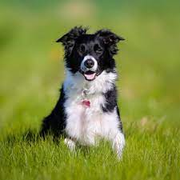

Este es el header de navegación
Razas de perros
Razas de perros
Razas de perros
Razas de perros
Razas de perros
Razas de perros
Este es un link externo a google
Formulario de búsqueda
Link a formulario
Lista ordenada
Opción1
Opción2
Opción3
Lista desordenada
Uno
dos
tres
Pastor Collie
Collie hace referencia a muchas razas de perro, con origen en Escocia y el norte de

Información de razas